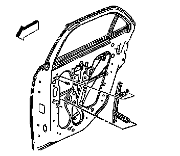

Rear Side Door Window Front Channel Replacement
Rear Side Door Window Front Channel Replacement
Removal Procedure
1. Ensure that the window is fully closed.
2. Remove the door trim panel. Refer to Rear Side Door Trim Panel Replacement (Service and Repair) .
3. Remove the water deflector. Refer to Rear Side Door Water Deflector Replacement (Service and Repair) .

4. Loosen the lower bolt.
5. Remove the upper bolt.
6. Rotate the top of the front window channel forward.
7. Lift upward on the window channel to disengage the lower bolt from the keyhole slot.
8. Remove the front window channel from the door.
Installation Procedure
1. Install the front window channel into the door, top end first.
2. Insert the lower bolt into the keyhole slot.
3. Rotate the top of the front window channel rearward and align on the lower edge of the window.
Notice: Refer to Fastener Notice .
4. Install the upper bolt.
Tighten the bolts to 9 N.m (80 lb in).
5. Install the water deflector. Refer to Rear Side Door Water Deflector Replacement (Service and Repair) .
6. Install the door trim panel. Refer to Rear Side Door Trim Panel Replacement (Service and Repair) .